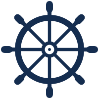

Project: Kept
Game support
Need a hand with a puzzle or a setting? We’re here to help. If you’re new to Kept, you can download it on the App Store.
How to play
- Check your goals. Look at the objectives above the board to see what the puzzle asks you to collect or clear.
- Connect matching pieces. Drag through two or more pieces of the same color, moving up, down, left, or right. Lift your finger to clear the pieces in your path.
- Close a loop. Bring your path back around to a piece you already connected before lifting your finger. Loops can clear matching pieces across the board and pieces or obstacles inside the loop.

Rotate the board. When the ship’s wheel is visible, drag it to turn the board, then release. A different orientation can open new paths.
Complete the puzzle’s goals to earn a check mark. More efficient solutions can earn additional check marks.
Puzzles and scoring
I’m stuck on a difficult level. What should I try?
Take a break from that board and revisit an earlier puzzle you found tricky or finished with one or two checks. Try a different opening, look for a loop, or give the board a turn if the wheel is available. A trick you discover on a familiar board might be just what you need when you come back.
Is using “Keep going” cheating?
No. That’s what it’s there for. If you run out of energy, choose “Keep going” to finish the puzzle with unlimited moves for that attempt. You’ll earn at least one check when you finish. You can always come back to try for more and practice for the harder puzzles ahead.
 Can I undo a move?
Can I undo a move?
Yes! Use Undo to take back your last move once per attempt. Want a fresh start? Choose Restart in Settings. You can retry as often as you like.
How does scoring work?
Moves spend energy. Clearing colored pieces earns points, and loops and long chains can earn bonuses. Any energy you have left when you finish counts toward your final score, which determines how many checks you earn. For a higher score, look for moves that clear more pieces or make progress on several goals at once.
Why try for a higher score after three checks?
Three checks are the top rating, and it can be fun to see how much more you can get out of a board. Your best score appears on the level preview. For a friendly challenge, pick a tricky level with a friend and compare scores after you both finish.
 How do I earn a frame, and can I share it?
How do I earn a frame, and can I share it?
Earn three checks to create a custom frame based on the longest chain and loop you made during that attempt. Choose Photo Mode in Settings to hide the controls and take a screenshot of a puzzle or its framed preview. Tap the screen to return to the game. We’d love to see what you make. Feel free to share your screenshots and frames with friends or on social media.
Settings and accessibility
I can’t distinguish the colors. What can I do?
Turn on Symbols in Settings. Each color gets a distinct symbol so you can match pieces by shape.
The screen movement makes me dizzy. What can I do?
Turn off Full Motion in the game’s Settings. This cuts down on screen movement. For example, the game uses a gentle fade when you go between a puzzle and the level map.
I don’t hear any sound. What should I check?
Turn on Sound and Music in the game’s Settings and turn up your device volume. If it’s still quiet, try turning off Silent mode. On iPhone, use the Ring/Silent switch or the Action button if it’s set to Silent mode.
Can the game remind me to take a break?
Open Settings and choose an interval under Break Timer, or select Off.
Progress and offline play
Can I play without Wi-Fi or mobile data?
Yes. You can take Kept with you and play as usual without an internet connection.
Where is my progress stored?
Your progress, settings, and scores are stored on your device. Project: Kept does not use accounts or cloud saves.
Will there be more chapters?
There are two chapters today, and we’d love to make more if there’s interest. If you’d like to help other players discover Kept, you can rate it on the App Store, tell a friend, or share one of your frames.
Does the game collect gameplay data?
No. Project: Kept does not include analytics, advertising, tracking, or third-party telemetry. See the privacy policy for details.
Contact Kept support
We’re happy to help. Email support@proudllama.com and tell us what happened. Please include your device model, your game version if you know it, and any steps we can follow to see the problem ourselves.